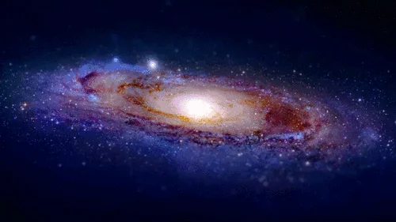

What is solar system?
The solar system is a gravitationally bound system comprising the Sun and all the celestial objects that orbit around it. These objects include eight planets and their moons, dwarf planets, asteroids, comets, and meteoroids. The solar system is located in the Milky Way galaxy and formed approximately 4.6 billion years ago from the gravitational collapse of a giant molecular cloud.
The solar system consists of the Sun at its center, around which eight major planets orbit: Mercury, Venus, Earth, Mars, Jupiter, Saturn, Uranus, and Neptune. Each of these planets has its own set of moons, with notable examples being Earth's Moon and Jupiter's Ganymede. In addition to the planets, there are smaller celestial bodies known as dwarf planets, including Pluto, Ceres, Haumea, Makemake, and Eris. The solar system also contains asteroids, primarily located in the asteroid belt between Mars and Jupiter, as well as comets, which are icy bodies that develop tails when they approach the Sun. Meteoroids, which are small rock or metal fragments, also drift through space within the solar system. Beyond Neptune lies the Kuiper Belt, a region filled with icy bodies and dwarf planets, and even further out is the Oort Cloud, a distant, spherical shell of icy objects that is believed to be the source of long-period comets.
Definition of Key Astronomical Terms and Concepts
- Asteroid - A small rocky body orbiting the Sun, primarily found in the asteroid belt between Mars and Jupiter
- Asteroid Belt - The region of the solar system located between the orbits of Mars and Jupiter where most asteroids are found.
- Astronomical Unit - A unit of measurement equal to the average distance between Earth and the Sun, approximately 93 million miles (150 million kilometers).
- Aurora - A natural light display in the Earth's sky, typically seen in high-latitude regions, caused by the interaction of solar wind with the Earth's magnetosphere.
- Black Hole - A region of space where the gravitational pull is so strong that nothing, not even light, can escape from it.
- Constellation - A group of stars forming a recognizable pattern traditionally named after its apparent form or identified with a mythological figure.
- Dark Matter - A form of matter that does not emit, absorb, or reflect light, detectable only through its gravitational effects on visible matter.
- Dwarf Planet - A celestial body that orbits the Sun and has enough mass to assume a nearly round shape but has not cleared its orbital path of other debris.
- Eclipse - An event in which one celestial body moves into the shadow of another, either blocking the light from the Sun (solar eclipse) or being obscured by the Earth's shadow (lunar eclipse).
- Exoplanet - A planet that orbits a star outside the solar system.
- Galaxy - A large system of stars, stellar remnants, interstellar gas, dust, and dark matter, bound together by gravity. 
- Light-Year - The distance that light travels in one year, approximately 5.88 trillion miles (9.46 trillion kilometers).
- Meteor - The streak of light produced when a meteoroid enters the Earth's atmosphere and burns up, commonly known as a shooting star.
- Meteoroid - A small rocky or metallic body in outer space, significantly smaller than an asteroid.
- Nebula - A vast cloud of gas and dust in space, often the birthplace of stars and planets.
- Orbit - The curved path of a celestial object or spacecraft around a star, planet, or moon.
- Planet - A celestial body that orbits the Sun, is spherical due to its own gravity, and has cleared its orbital path of other debris.
- Quasar - A very bright and distant active galactic nucleus, powered by a supermassive black hole.
- Satellite - A celestial body that orbits another body, such as a moon orbiting a planet or a human-made object orbiting Earth.
- Solar System - The Sun and all the celestial bodies that orbit it, including planets, moons, asteroids, comets, and meteoroids.
- Star - A massive, luminous sphere of plasma held together by gravity, undergoing nuclear fusion to produce light and heat.
- Supernova - A powerful and luminous explosion that occurs at the end of a star's lifecycle, often resulting in the creation of a neutron star or black hole.
- Universe - The totality of all space, time, matter, and energy, including galaxies, stars, planets, and all other forms of matter and energy.
- White Dwarf - A small, dense remnant of a low-to-medium mass star that has exhausted its nuclear fuel and shed its outer layers.


Main Topics in Astronomy
Cosmology
Cosmology is the study of the universe as a whole, including its origin, evolution, structure, and eventual fate. It encompasses the Big Bang Theory, the expansion of the universe, the cosmic microwave background radiation, and the distribution of galaxies. Cosmologists explore fundamental questions about the universe's beginning, its large-scale structure, dark matter, dark energy, and the ultimate fate of the cosmos. Theoretical models and observations, such as those from the Hubble Space Telescope and the Planck satellite, are crucial in cosmological research.
Stellar Astronomy
Stellar astronomy focuses on the study of stars, their formation, evolution, and death. This includes understanding the different types of stars, their life cycles from nebulae to main sequence stars, and their end stages, which can result in white dwarfs, neutron stars, or black holes. Key aspects include the Hertzsprung-Russell diagram, stellar nucleosynthesis, and the processes of supernovae and pulsars. Observations from ground-based telescopes and space missions like the Hubble Space Telescope provide valuable data on stellar phenomena.
Galactic Astronomy
Galactic astronomy deals with the structure, composition, and dynamics of galaxies, including our own Milky Way. This field explores the formation and evolution of galaxies, the distribution of stars and interstellar matter within them, and the presence of supermassive black holes at their centers. The study of galaxy collisions, the formation of spiral and elliptical galaxies, and the role of dark matter in galactic structure are key topics. Observatories like the Very Large Telescope (VLT) and the James Webb Space Telescope (JWST) provide critical insights into galactic phenomena.
Exoplanetary Science
Exoplanetary science focuses on the discovery and characterization of planets outside our solar system. The study of exoplanets includes determining their sizes, orbits, compositions, and potential for hosting life. Techniques such as the transit method and radial velocity method have led to the discovery of thousands of exoplanets. The search for habitable exoplanets and the analysis of their atmospheres for signs of life are major areas of research. Missions like Kepler, TESS, and the upcoming James Webb Space Telescope are at the forefront of exoplanetary science.
Astrobiology
Astrobiology explores the potential for life beyond Earth. This interdisciplinary field combines biology, chemistry, geology, and astronomy to study the conditions necessary for life and the potential habitats in our solar system and beyond. The search for microbial life on Mars, the study of extremophiles on Earth, and the investigation of potentially habitable moons like Europa and Enceladus are key areas. Astrobiologists also examine the atmospheres of exoplanets for biosignatures, which are indicators of possible life.
Dark Matter and Dark Energy
Dark matter and dark energy are two of the most enigmatic components of the universe. Dark matter, which does not emit or interact with light, is inferred from its gravitational effects on visible matter, such as the rotation curves of galaxies and the gravitational lensing of light. Dark energy is a mysterious force driving the accelerated expansion of the universe. Understanding these components is crucial for explaining the universe's large-scale structure and its fate. Research involves theoretical models, simulations, and observations from instruments like the Large Hadron Collider (LHC) and the Dark Energy Survey.
Astronomical Techniques and Technologies
The development and application of advanced techniques and technologies are fundamental to modern astronomy. This includes the use of optical, radio, and space-based telescopes, spectroscopy for analyzing the light from celestial objects, and computational methods for simulating astronomical phenomena. Adaptive optics, interferometry, and data analysis techniques enable astronomers to observe and interpret data with unprecedented precision. Ground-based observatories like the Atacama Large Millimeter/submillimeter Array (ALMA) and space missions like the Hubble and James Webb Space Telescopes play crucial roles in astronomical research.
Fun Facts about Astronomy
-
The Diamond Planet - 55 Cancri e:
55 Cancri e is an exoplanet about 40 light-years away in the constellation Cancer. It's often referred to as the "diamond planet" because it's thought to be composed largely of carbon, much of which could be in the form of diamond due to the extreme pressures and temperatures on the planet. This discovery suggests that there are planetary compositions very different from those found in our solar system, offering intriguing possibilities for the diversity of planets in the universe. -
The Largest Known Structure in the Universe - The Hercules-Corona Borealis Great Wall:
The Hercules-Corona Borealis Great Wall is a massive galaxy filament and the largest known structure in the universe. It's about 10 billion light-years in length, discovered through the study of gamma-ray bursts. This immense structure challenges our understanding of the universe's large-scale structure and raises questions about how such enormous formations came to be. -
Rogue Planets:
Rogue planets are planets that do not orbit any star and instead drift through space. They are thought to be ejected from their original star systems due to gravitational interactions or collisions. Some studies suggest that there could be more rogue planets in our galaxy than stars, potentially offering unique environments vastly different from those of planets within star systems. -
The Coldest Place in the Universe - The Boomerang Nebula:
The Boomerang Nebula, located about 5,000 light-years away in the constellation Centaurus, is the coldest known natural place in the universe. With temperatures reaching just 1 degree Kelvin (−272.15 degrees Celsius or −457.87 degrees Fahrenheit), it is even colder than the background temperature of space. The extreme cold is due to the rapid expansion of gas from the dying central star. -
Cosmic Cannibalism - Galactic Mergers:
Galactic cannibalism refers to the process by which larger galaxies merge with and consume smaller ones. Our own Milky Way galaxy is on a collision course with the Andromeda galaxy, and in about 4.5 billion years, the two will merge to form a new galaxy, often referred to as Milkomeda or Milkdromeda. Observations of other galaxy mergers help astronomers understand the dynamic and ever-changing nature of galaxies in the universe.
Quiz
1. How did the Hubble Deep Field observation in 1995 change our understanding of the universe?
2. Describe one contribution of ancient Babylonians to early astronomy.
3. Explain the impact of the Islamic Golden Age on the development of astronomy during the medieval period.
4. How did the heliocentric model proposed by Copernicus revolutionize our understanding of the solar system?
5. What are some of the key research areas in contemporary astronomy, and why are they significant?